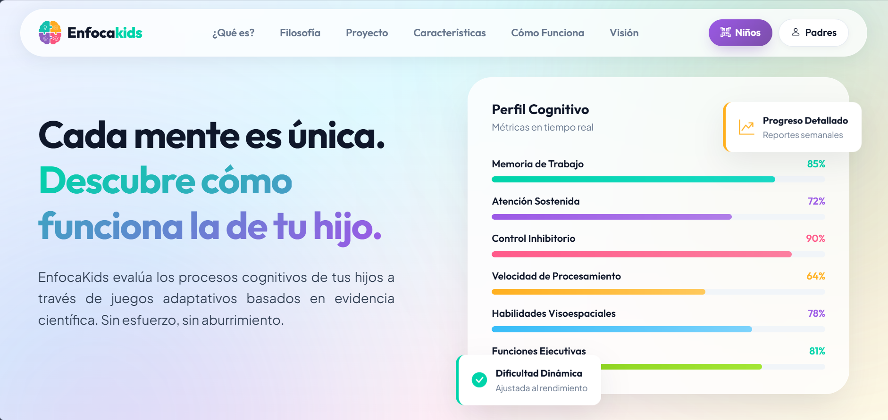

En Producción Real • Proyecto Propio • Escuela Primaria
EnfocaKids
Ecosistema interactivo de estimulación cognitiva y seguimiento del desarrollo infantil en 6 dimensiones. Actualmente implementado y en operación real junto a un colegio de nivel primaria, donde las niñas y niños utilizan diariamente la plataforma en sus dinámicas pedagógicas mientras se capturan métricas de precisión y latencias en milisegundos con arquitectura PWA offline y estándares estrictos con PHPStan.